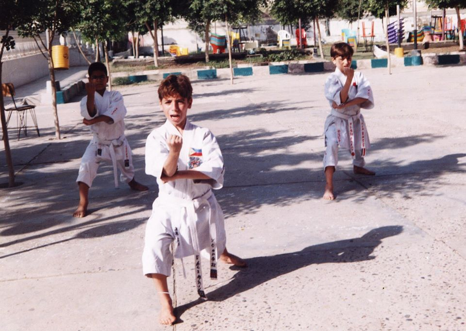

historical details
I was born at
10th of November
1993
and frankly this should be a special date for many people.
On 2017 I graduated from faculty of commerce tanta
university by an accepted grade.
On
10th of Jan 2018
EGYPT
told me that: hey Essam it's your turn to protect me.
,
then i answered ofcourse i will.
On
1st of March
2019
the service was accomplished .
career
My career path divided to three parts:
1st part
starts when i was a student, in that time a worked for
Lahalebo Restaurant as a cashier and
step by step i became a
Head Manager for The Home Delivery Section; after
that I went to serve in the army.
2nd part
starts after I finished the army serve, and this is the worst part
of my entire live. I warked as an accountant for
Egypt Pharma Company For Medical Industries, I Was Responsible for
The Daily Expenses And I Was Doing a Periodic Inventory of The
Stores. I was completely miserable in this period of my life so I
decided to quit.
By the way I started learning Programing in this
section of my live.
3rd part
starts after leaving my job as an accountant, here i started to
dive deeper in learning programing, improve my skills and i loved
this time because i felt that i finally found my ambition.
Interests
I had some Interests for example i was a champion in karate, i
loved to watch the Tennis Sport on TV and i remember that one day
i staied watching a Tennis match between Nadal vs Federer for more
than 4 hours, it was an amaizing day for me.

skills
I have a good knowledge in HTML and CSS, i can build a nice structure for web sites using grid system and Flexbox. I also have a good experinces in javascript, I can deel with dom and i have a good knowlidge in oop where i know a lot about Objects, Prototypes and Prototypical Inheritance, Abstraction and Polymorphism.